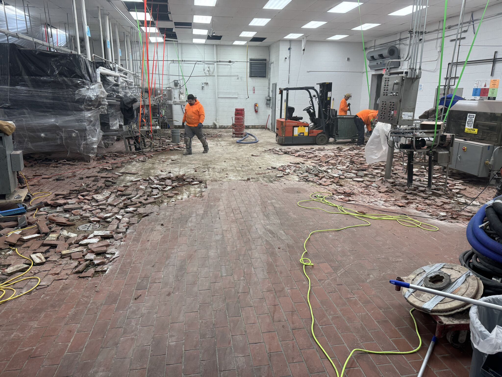
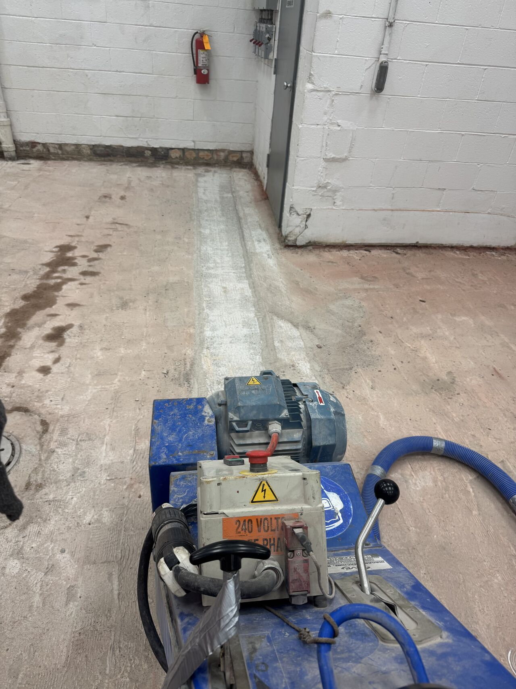

Dairy brick was the industry standard for decades. And for decades, it's been failing. The grout joints crack, bacteria colonize the seams, bricks pop loose under forklift traffic, and suddenly you've got a floor that's working against your food safety program instead of supporting it. This midwestern dairy processor had 2,652 square feet of that problem — and they were ready to solve it for good.
Out with the Brick
The first step: rip it all out. Our crew removed every brick and chipped away the deteriorated mortar bed underneath. A forklift helped move the massive volume of debris. This is the messy part, but it's necessary — you can't build a food-safe floor on top of a compromised substrate.
Prep & Profile
With the brick removed, we scarified the concrete substrate to create the mechanical profile needed for proper adhesion. Then SaniBulk polymer concrete was used to fill voids, correct slope issues, and create a uniform substrate for the new floor system.
The New Floor

SaniCrete SL 3/8" cementitious urethane went down across the entire 2,652 SF area, finished with a broadcast quartz aggregate for slip resistance and sealed with a protective topcoat. A 6-inch radius cove base runs the perimeter — creating a seamless transition from floor to wall that eliminates the harborage points dairy inspectors look for.
The result: a seamless, antimicrobial, chemical-resistant floor that's USDA and FDA compliant. No more grout joints. No more loose bricks. No more failed audits. Just a floor built for the demands of dairy processing — daily washdowns, CIP chemicals, thermal shock, and heavy traffic.
Project Details
- Facility: Midwestern Dairy Processor
- Area: 2,652 SF
- Removed: Failing dairy brick and mortar bed
- Fill: SaniBulk polymer concrete
- System: SaniCrete SL 3/8" with quartz broadcast + sealcoat
- Curbing: 6" radius cove base